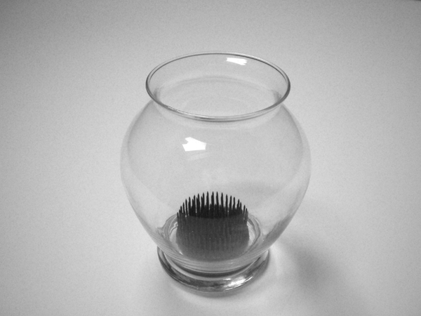

|  | Socle: Let R be a ring. The socle of an R-module M is the
(unique) maximal semisimple R-submodule of M.
A plant frog plays the role in a vase that a socle plays in an artinian module. Every submodule of an artinian module contains a simple submodule; thus, the socle of the module forms, in a sense, the module's "base" (hence, the name "socle," an architectural term referring to a plinth used to support a pedestal or column). A plant frog pierces (is contained in) flowers (submodules), and forms the "base" of a flower arrangement (module).
|